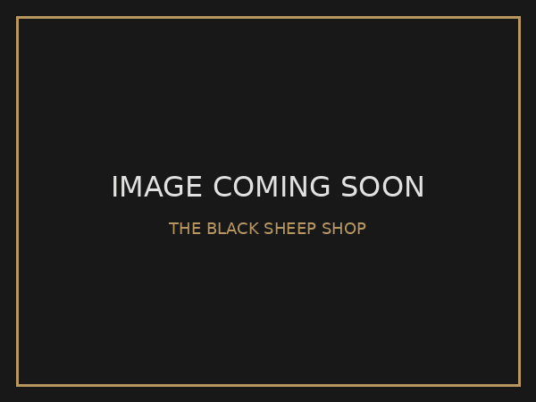
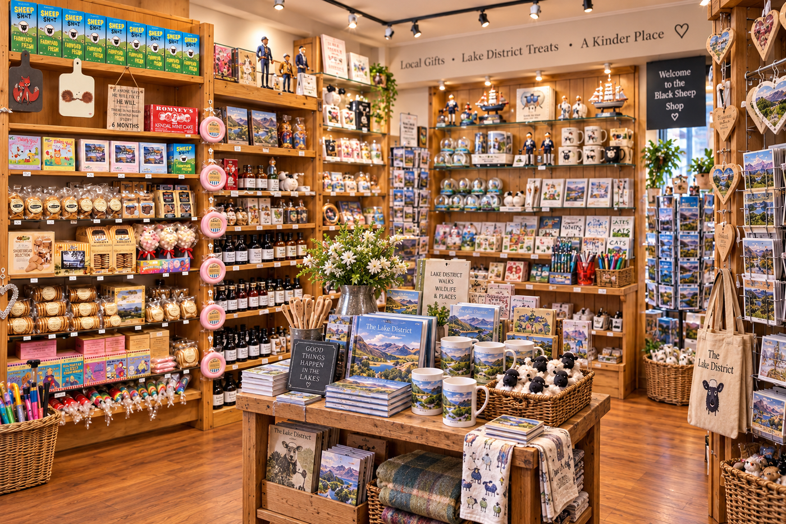
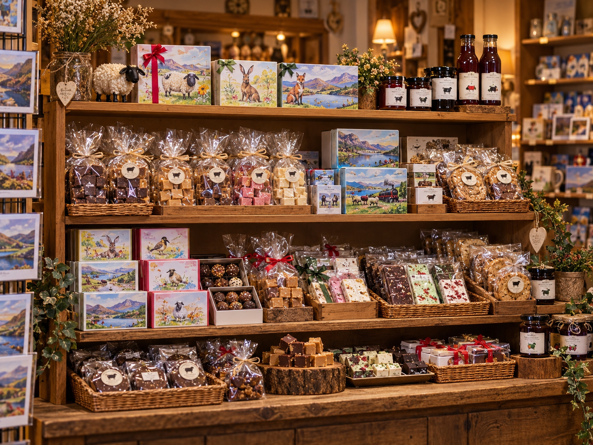
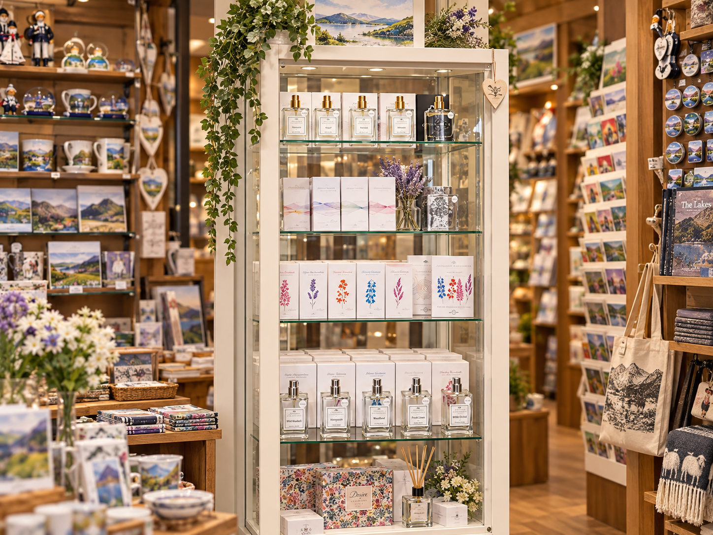

A gift shop full of character.
Explore a broad, colourful in-store range built around Peter Rabbit, Highland cows, Ambleside and Lake District souvenirs, soft toys, cards, local treats and regional favourites.

Our core gift ranges.
The site now reflects the breadth of the real shop: strong destination collections, a deep local souvenir range and plenty of family-friendly gifts.
Beyond the main collections.
Maps and jigsaws, our own-labelled treats, Lakeland Fragrances, home gifts and children’s games are all part of the wider in-store mix.

Organised online. Product-rich in store.
Our shop is intentionally full of choice: small souvenirs, character gifts, home pieces, toys, food gifts and local favourites. The website keeps that range easy to browse without pretending the physical shop is a minimal boutique.
Explore all giftsTreats worth taking home.
Alongside gifts and souvenirs, the shop carries selected Lake District food brands, our own-labelled confectionery and Luxury Lakes Ice Cream.

Fudge, biscuits & sweets
Our own-labelled fudge, biscuits, brittle and changing confectionery lines.
Browse Black Sheep treats
Romney's
Kendal Mint Cake, hand-baked biscuits, shortbread and gift lines.
Browse Romney's
Hawkshead Relish
Ketchups, mustard, jams, marmalades, chutneys and pickles seen in our range.
Explore Hawkshead Relish
Luxury Lakes Ice Cream
Explore the flavour range and ask us for current availability and allergen information in store.
Explore flavours
Lakeland Fragrances
A dedicated local fragrance range including scents visible in our cabinet.
Browse fragrancesSee the full range in person.
Stock changes regularly and seasonal collections move quickly. Visit us for the widest current choice.